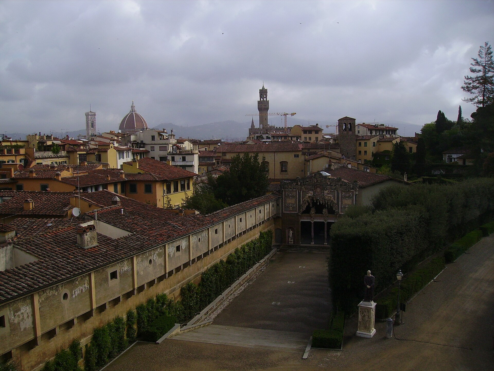
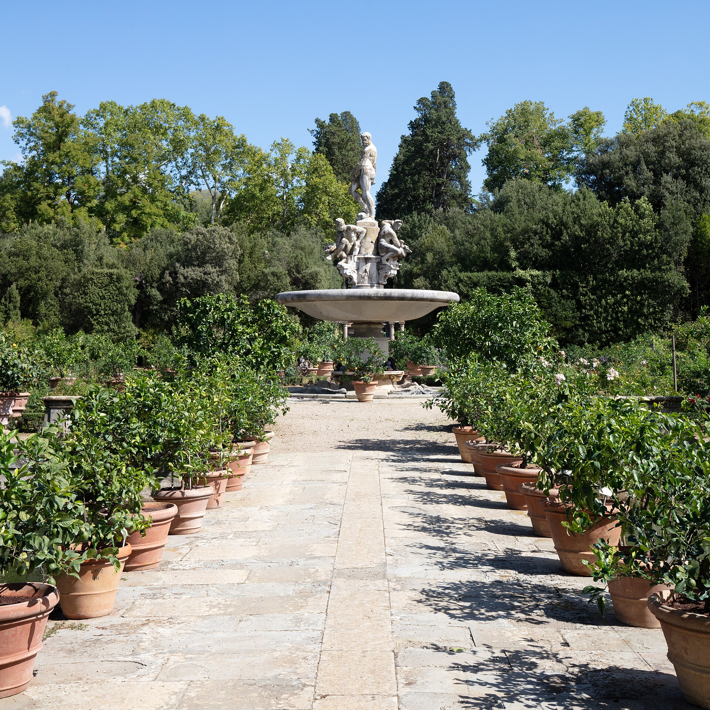
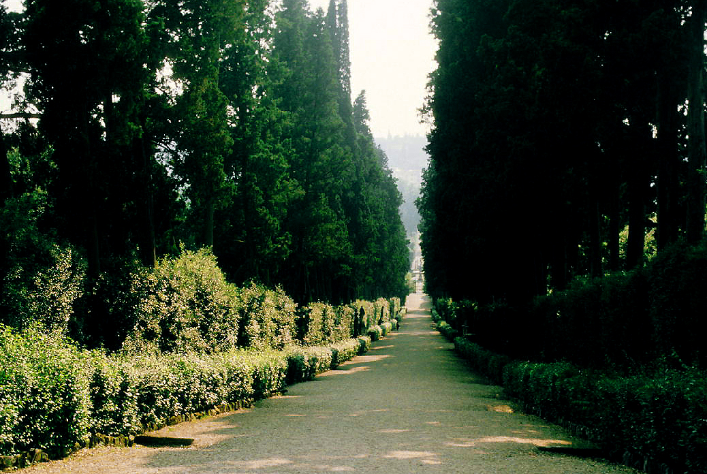
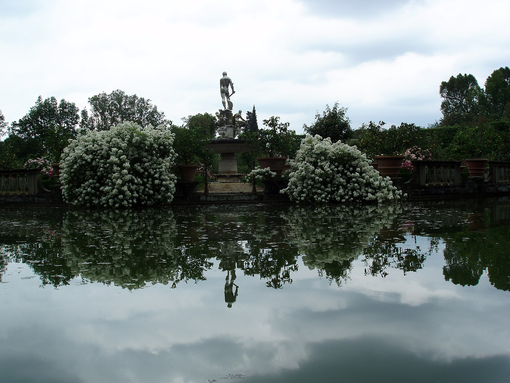
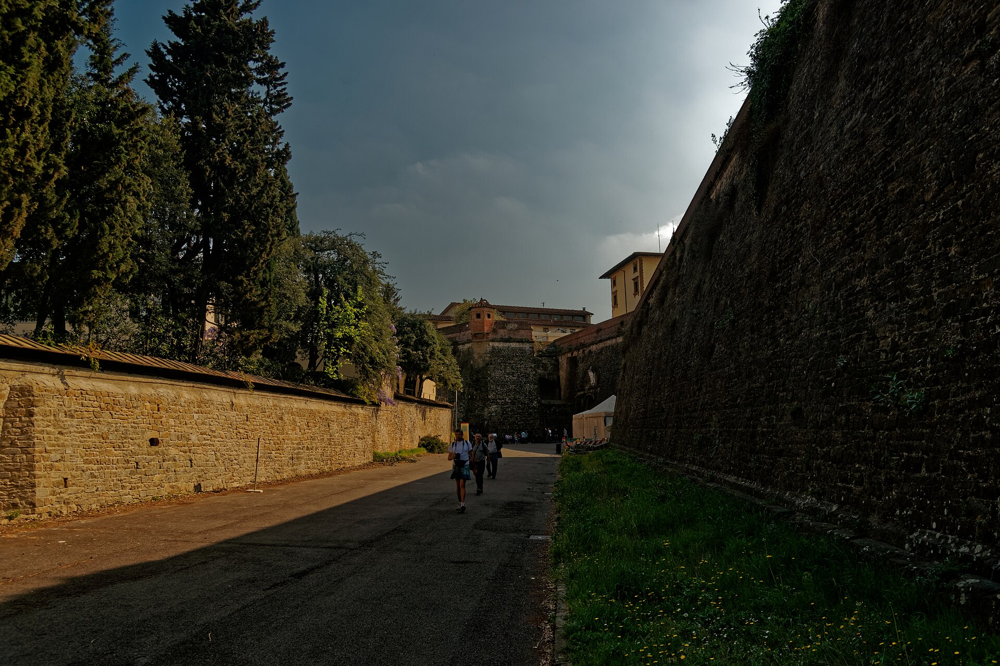

1550 年起为埃莱奥诺拉大公夫人修建的庭园：轴线、阶梯、喷泉、雕塑与柏树大道依山而建，是“意大利式园林”的范本（凡尔赛的远祖之一）。走到山顶的贝韦代雷要塞，佛罗伦萨全景免费附赠。
看点路线
Il Percorso
- 1安曼那提《海洋喷泉》与背后的 Amphitheater 山坡剧场
- 2布翁塔伦蒂洞窟 Grotta Grande：人工钟乳石里的奇幻空间
- 3柏树大道 Viale dei Cipressi 与骑士平台
- 4Belvedere 要塞：全城最被低估的观景台
园中看点
Il Giardino · 5 处停留点

大洞窟 Grotta Grande
人工钟乳石包裹的三室洞窟：米开朗基罗四尊《囚徒》的原作曾在这里“住”了三百年（1908 年移入学院美术馆），如今洞内陈列复制品与维纳斯像。美第奇时代这里演出水景与灯光戏--文艺复兴的“沉浸式主题乐园”。

海洋喷泉与山坡剧场
"Biancone"海神像立于马车之上，背后是依山而建的露天剧场（Amphitheater）--美第奇宫廷歌剧与假面剧的首演场地。歌剧这个艺术形式就诞生在美第奇宫廷的这类舞台上：波波里是歌剧的“外婆家”。

柏树大道
一条近 200 米的柏树中轴路通向 Isolotto 水池广场。托斯卡纳柏树的墨绿色尖塔与脚下黄土地面，是全园最“出片”的纵深感--黄昏时走进去，光线被柏树切成条状。

Isolotto 八角水池
园子南端的大水池与八角小岛，岛上立着詹博洛尼亚学派的《海洋的奥克阿诺斯》。这里曾是宫廷赛船与水上宴会的场地--把“海”搬进山顶花园，是美第奇式豪横的又一个注脚。

贝韦代雷要塞
花园最高点的星形要塞，既是防御工事（防的其实是城内暴动）又是观景台。站在平台上：佛罗伦萨全城、圣母百花穹顶与托斯卡纳丘陵同框--比米开朗基罗广场人少十倍的全景位。
历史故事
Le Storie
壹一座花园的权力语法
波波里的设计语言是“轴线与制高点”：从碧提宫后门的中轴视廊一路爬升，每段台阶尽头都有雕塑或喷泉作为“奖赏”。这套语法被后世总结为“意大利式园林”。
埃莱奥诺拉买下碧提宫时，山坡还是荒地。三代人接力 50 年，凿山成阶、引水成瀑。园中的古罗马雕塑与埃及方尖碑延续了美第奇的收藏逻辑：花园也要像博物馆。
凡尔赛宫的园林师勒诺特承认从意大利园林取经--你在社交媒体刷到的每一座欧洲对称花园，DNA 里都有这座山坡。
贰洞窟里的“囚徒”
大洞窟（Grotta Grande）的人工钟乳石里曾“住”着米开朗基罗四尊《囚徒》的原作三百年（1583 年移入，1908 年移入学院美术馆）--花园曾是雕塑的家。
洞窟由布翁塔伦蒂设计：三室递进，水景、贝壳与钟乳石的奇幻空间，美第奇时代在这里上演水机巧与灯光戏--文艺复兴的“沉浸式主题乐园”。
如今洞内陈列的是《囚徒》复制品与维纳斯像。站在里面想象四尊真迹当年从阴影里半身探出的样子：花园曾经比美术馆更“当代”。
叁骑士台与“面包花园”
花园东南角的骑士平台（Bastione del Cavaliere）由巴乔·班迪内利设计，视野越过城墙直达托斯卡纳丘陵--美第奇在这里“俯瞰自己的领地”。
平台下的菜园（Giardino del Cavaliere）至今种着果树与香草：大公的餐桌从花园直供。文艺复兴园林的另一半是“口腹之欲”--药草、柠檬与无花果都有专区。
走累的话，这里是全园最安静的野餐点：园内允许携带食物。
肆海洋喷泉与“被搬走的海神”
安曼那提的《海洋喷泉》（1575）：海神立于贝壳战车，四周宁芙与河神--为它做模型的正是年轻的詹博洛尼亚。
喷泉的青铜海神在 1930? 年代曾被整体移入室内保护，广场上换复制品--“原作休息、复制品上班”是意大利雕塑的常见人事制度。
背后的山坡剧场（Amphitheater）是歌剧的产房：1589 年《La Pellegrina》的舞台机械在此试装，歌剧这个体裁从佛罗伦萨宫廷花园走向世界。
伍柏树大道的“纵深感”
Isolotto 往回走的柏树大道（Viale dei Cipressi）近 200 米，两侧托斯卡纳柏树如墨绿尖塔--黄昏时逆光走出一条“时间的走廊”。
这条路的栽植比园林主体晚（17-19 世纪补植），却成了全园最上镜的一笔：一位英国旅行者在 19 世纪写道，走在其间“像走在竖琴的弦之间”。
拍人像的技巧：让人物走在路中、镜头贴低--柏树的透视会替你把画面收束成一首十四行诗。
陆Isolotto：把海搬上山
园子南端的八角水池 Isolotto（“小岛”）由詹博洛尼亚学派主持（1612-1620）：小岛上立着《海洋的奥克阿诺斯》，四周骏马雕像涉水--美第奇宫廷的赛船与水上宴会场地。
在山顶花园里造一片“海”，是美第奇式豪横的又一个注脚：他们的船队真的控制过第勒尼安海。
找骏马雕像上被摸得发亮的马蹄--学生的“及格护身符”传统从 19 世纪延续至今。
柒贝韦代雷要塞：防“自己人”的堡垒
花园最高点的星形要塞（Forte di Belvedere，1590-1595）由布翁塔伦蒂设计--防御方向不是外敌，而是城内暴动：大公家族随时可退守花园、撤往山野。
它同时也是观景台与宴会厅：美第奇在这里办过著名的“树冠晚宴”。今天的要塞常年办当代艺术展--堡垒的第三次就业。
从平台看全城：圣母百花穹顶、旧宫塔与托斯卡纳丘陵同框，且人流量是米开朗基罗广场的十分之一。
捌花园的“植物殖民史”
波波里是最早的“植物试验田”之一：来自新大陆的番茄、玉米与向日葵在美第奇花园试种；园里的黎巴嫩雪松与木兰是 17-18 世纪植物猎人的战利品。
柑橘温室（Limonaia）保存着数百盆柠檬与香橼--冬天推入温室、夏天推出列阵，这个“搬树”的仪式持续了四百年。
花园因此是一座活的博物志：每棵树都是一页航海与贸易档案。
玖1966 年洪水与花园的伤
1966 年 11 月 4 日，阿诺河洪水漫过河岸：碧提宫一层被淹，波波里山坡成了临时泄洪道，部分挡土墙与台阶被冲毁，数千件馆藏图书与绘画受损。
"泥天使"（angeli del fango）--来自世界各地的志愿者在淤泥里抢救文物，花园的修复持续了数十年。
骑士平台附近的一面墙上仍留着当年的洪水刻度线：比一个成年人还高。花园记得那一天。
拾“闭园前一小时”的黄金法则
波波里关园时间是“日落前一小时停止入场”--旺季 10 月约 17:30 停止进入、18:30 清场。掐着 16:00 进园，光线正好开始变金。
推荐路线（90 分钟版）：正门 -> Amphitheater -> 洞窟（若开放）-> 骑士台 -> 柏树大道折返 -> Belvedere 要塞 -> 下山出侧门。
碎石坡道多、遮阴不均：运动鞋 + 水 + 下午茶时间出发，是这座花园的正确打开姿势。
参观贴士
Consigli Pratici
- 花园大且多碎石坡道，穿运动鞋；夏季无遮阴多，带水
- 经典动线：碧提宫 -> 花园中轴 -> 柏树大道 -> Belvedere 要塞（约 1.5-2h）
- 周二花园部分区域维护，出发前查官网
- 日落前 2 小时进园最舒服：光线金色、游客稀疏
- Isolotto 与骑士平台人少安静，适合野餐（园内允许）
顺路同游
Da Non Perdere